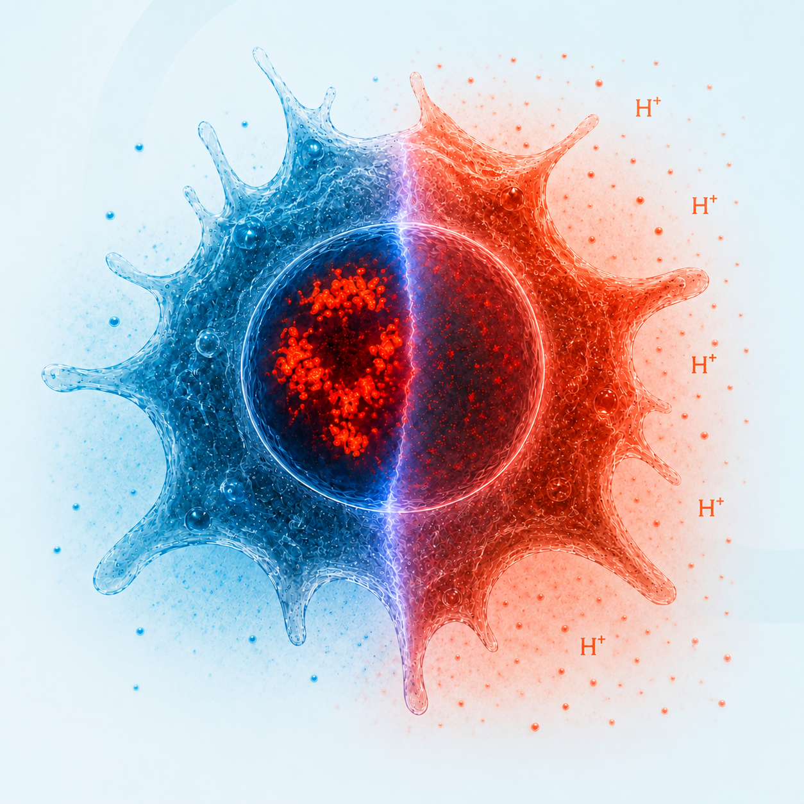

Physiological sensing by nuclear condensates
We study how pH and related environmental cues alter the physical state of transcriptional and chromatin-regulatory assemblies.
Tissue physiology · Nuclear organization · Immunity
We investigate how physicochemical features of tissue environments are sensed and encoded by transcriptional, chromatin, and translational systems to control inflammation and cell fate.
Explore our researchJoin the lab
Research
Tissues are dynamic physicochemical environments. We seek general principles that explain how physiological variables reshape gene-regulatory machinery and guide immune-cell adaptation.
We study how pH and related environmental cues alter the physical state of transcriptional and chromatin-regulatory assemblies.
We investigate how environmental states are encoded in chromatin organization, transcriptional dynamics, and lasting inflammatory programs.
We explore how tissue physiology influences macrophage and monocyte state, differentiation, function, and disease-associated behavior.
People
Professor and Principal Investigator
University of Science and Technology of China
State Key Laboratory of Immune Response and Immunotherapy
Zhongyang Wu studies how tissue physicochemical environments regulate inflammatory responses through the physical organization of gene-control machinery. He received his Ph.D. from Tsinghua University and completed postdoctoral training at Boston Children’s Hospital and Harvard Medical School.
Selected publication
Wu Z., Pope S.D., et al. This study identifies transcriptional condensates as intracellular pH sensors that translate tissue acidity into gene-specific inflammatory responses.
News
The Wu Laboratory welcomes applications from postdoctoral fellows, Ph.D. students, and master’s students interested in tissue immunology, biomolecular condensates, and immune-cell adaptation.
Join us
We welcome inquiries from motivated postdoctoral fellows, Ph.D. students, and master’s students interested in immunology, gene regulation, chromatin biology, and the physical organization of cells. Please email a CV and a brief description of your research interests.
Contact
Yisuan Building, West Campus
University of Science and Technology of China
Hefei, Anhui, China